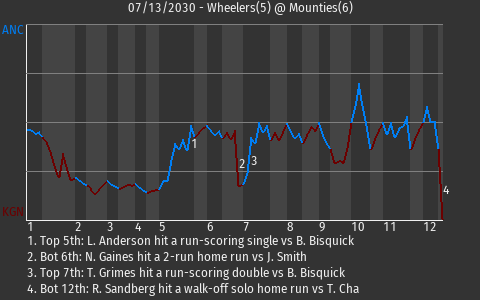

| MINOR LEAGUE PBE ANCHORAGE WHEELERS AT KINGSTON MOUNTIES 07/13/2030 |  | |
| |
|
 | | MINOR LEAGUE PBE | | ANCHORAGE WHEELERS AT KINGSTON MOUNTIES | | GAME ID: 557 - SATURDAY, JULY 13TH, 2030 - GAME LOG | | | 1 | 2 | 3 | 4 | 5 | 6 | 7 | 8 | 9 | 10 | 11 | 12 | R | H | E |
|---|
| Anchorage Wheelers (20-23) | 0 | 0 | 0 | 0 | 3 | 0 | 2 | 0 | 0 | 0 | 0 | 0 | 5 | 13 | 1 | | Kingston Mounties (24-19) | 3 | 0 | 0 | 0 | 0 | 2 | 0 | 0 | 0 | 0 | 0 | 1 | 6 | 10 | 2 |
|
|  |
|
| Mounties Top Wheelers in 12 | Kingston center fielder Net Gaines played a vital role in his team's 6-5 triumph over Anchorage. He was 2 for 5 with a home run. He drove in 2 runs and scored once for Kingston. Kingston has a 3-game win streak, while Anchorage has lost 3 in a row.
Kingston took a 6-5 lead on Robert Sandberg's 11th home run of the season. The solo home run came off Anchorage pitcher Tae-min Cha in the bottom of the 12th.
"The game of baseball will test you," said , the Kingston skipper. "This one tested us."
|
| |  |
|
|
| ANCHORAGE BATTING LINESCORE | | KINGSTON BATTING LINESCORE |
|---|
|
BATTING
Doubles: T. Grimes (6, 7th Inning off B. Bisquick, 1 on, 0 outs)
Total Bases: T. Turtle , D. Thomas , S. Michaels , L. Anderson 2 , D. Jackson 2 , T. Grimes 3 , M. Smart 3 , J. Bauer II
2-out RBI: L. Anderson
Runners left in scoring position, 2 outs: S. Michaels , D. Jackson 2 , J. Bauer II
GIDP: J. Bauer II
Team LOB: 11
BASERUNNING
SB: B. Simmons (15)
FIELDING
Errors: J. Bauer II (7)
Double Plays: 1 (Jackson-Thomas) |
| | BATTING
Home Runs: N. Gaines (5, 6th Inning off J. Smith, 1 on, 2 outs) R. Sandberg (11, 12th Inning off T. Cha, 0 on, 0 outs)
Total Bases: N. Gaines 5 , D. Houston , A. Green , S. Shea , B. McDonald , R. Sandberg 4 , T. Sigurdsson 3
2-out RBI: N. Gaines , T. Sigurdsson
Runners left in scoring position, 2 outs: K. Hungus , S. Shea
Team LOB: 7
FIELDING
Errors: T. Dude (1) , N. Gaines (2)
Double Plays: 1 (Green-Shea-McDonald) |
|
|
|
| ANCHORAGE PITCHING LINESCORE | | KINGSTON PITCHING LINESCORE |
|---|
|
| | | PITCHING
Game Score: B. Bisquick 40
Batters Faced: B. Bisquick 35, T. Buchet 1, T. John 8, T. Dude 6, A. Hendricks 3
Ground Outs - Fly Outs: B. Bisquick 15-5, T. Buchet 0-0, T. John 1-5, T. Dude 2-0, A. Hendricks 1-0
Pitches - Strikes: B. Bisquick 117-70, T. Buchet 3-3, T. John 25-16, T. Dude 34-19, A. Hendricks 20-13
Inherited Runners - Scored: T. Buchet 1-0
|
|
|
|
| GAME NOTES |
Player of the Game: Net Gaines
Ballpark: The Barracks
Weather: Rain (76 degrees), wind blowing left to right at 9 mph
Start Time: 7:05 PM EST
Time: 4:33
Attendance: 16225
Special Notes: Rain delay of 16 minutes in the 5th inning. |
 |